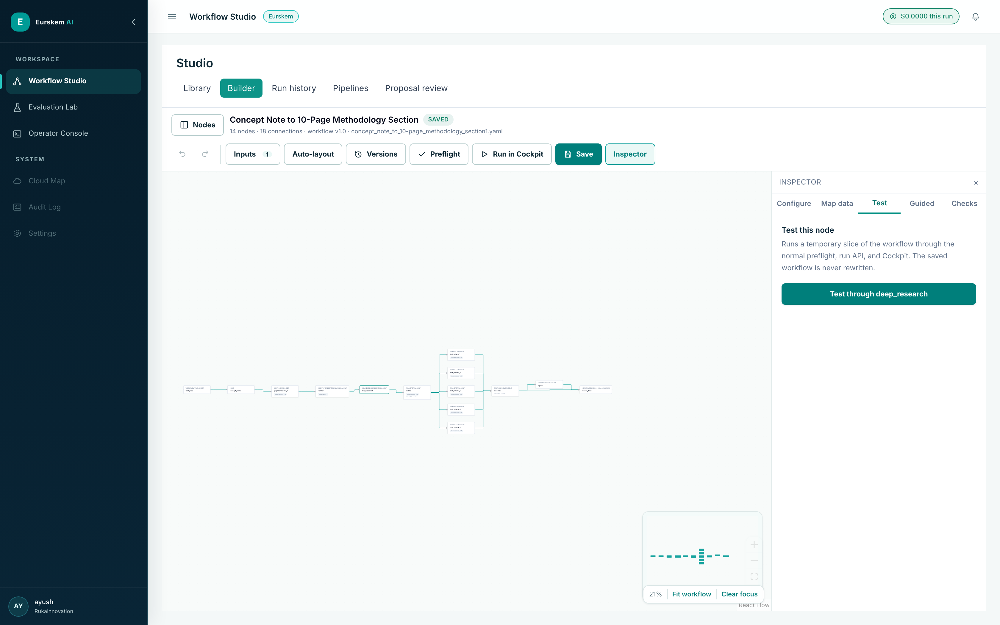
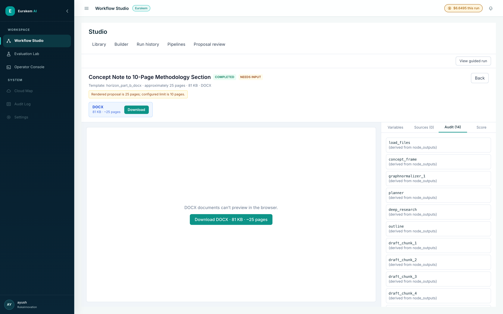
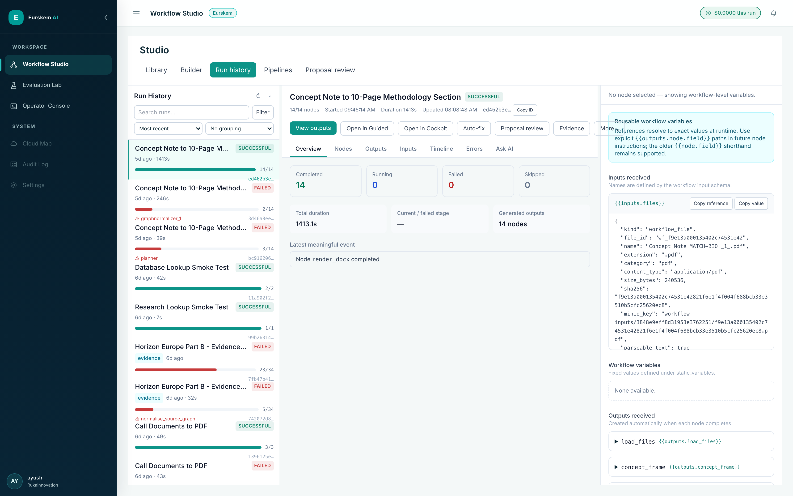
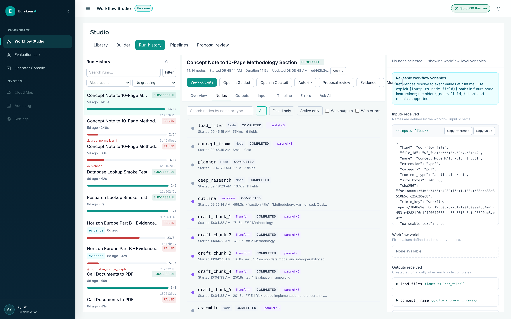
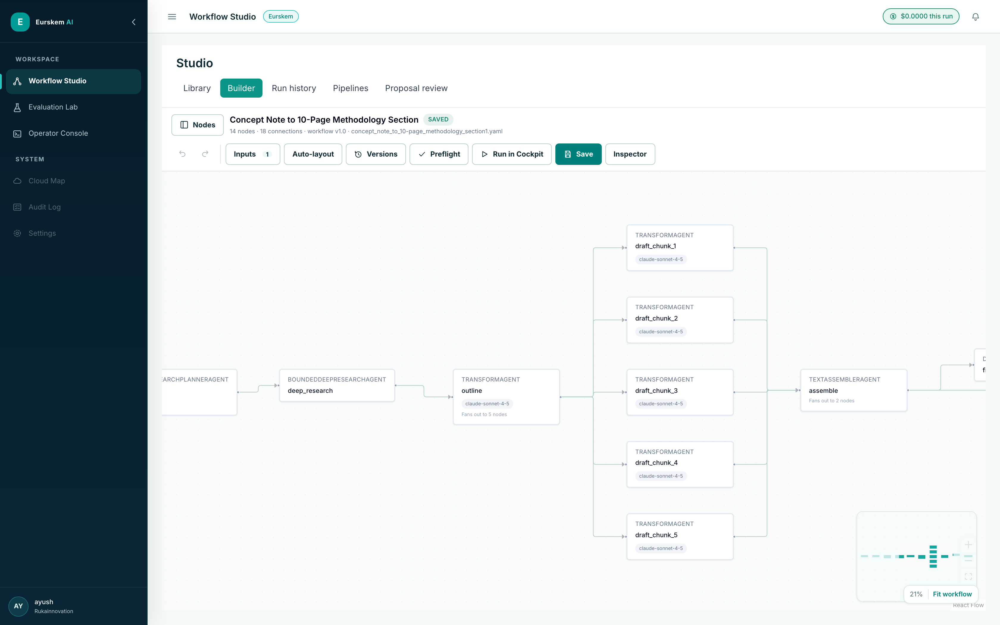
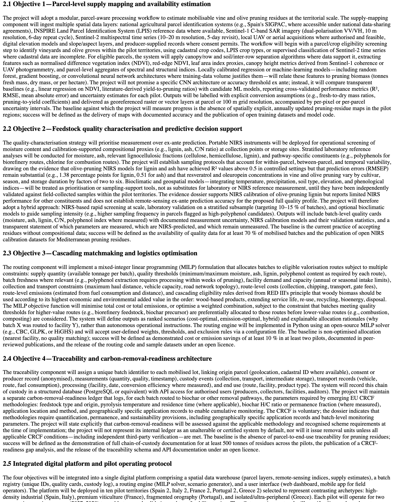

Architecture, workflow runtime, evidence integrity, guided user experience,
security, operations, and defensible engineering decisions — illustrated throughout with
screenshots captured from the running application.
Positioning
Eurskem AI is the reusable platform. Project Alex is a flagship proposal-generation use case
built on that platform, not the platform itself.
Owner
Ayush Khandelwal
Repository
github.com/ayushak26/agentic-workflow-platform
Code snapshot
main at 7ca16b2 — 3 August 2026
Screenshot basis
Local instance of 7ca16b2, captured 9 August 2026
Worked example
Run ed462b3e — Concept Note to 10-Page Methodology Section
Product experience: Guided Run, Builder, and Cockpit
System architecture and runtime boundary
Workflow contract, Builder durability, and preflight
Research, retrieval, and evidence integrity
Model routing, cost, and evaluation
Security, confidentiality, and data responsibilities
Deployment, observability, and recovery
Testing, failure modes, and engineering decisions
Interview and portfolio walkthrough
Appendix A. Worked example — concept note to a 10-page methodology section Appendix B. Code and repository reference map Appendix C. Screenshot index and capture method
Evidence basis and version note
This document reconciles three supplied references with the current public repository. The June
Source of Truth describes the earlier local-only build. Current main includes
additional Guided Run, Builder recovery/versioning, zero-token preflight, bounded research,
evidence-integrity contracts, Redis-backed durability, and IONOS deployment tooling.
New in this revision: every screenshot is a real capture from a local instance of
7ca16b2 on 9 August 2026, and the run figures in Appendix A are read from that
instance's MongoDB run_history and cost_ledger collections. They are
evidence of a working local build. They remain local evidence: live production server
health was not independently inspected while preparing this document.
1Executive summary and truth boundary
What the platform is, what the repository proves, and what must not be overclaimed.
Eurskem AI is a node-typed platform for composing and operating high-stakes AI workflows.
Business users can start work through a guided experience; workflow authors can edit the graph and
its data mappings; technical users can inspect the same run in a live Cockpit. A validated YAML
contract is compiled to LangGraph at runtime, and every node passes through common execution,
audit, event, cost, and output-validation boundaries.
The distinctive engineering idea is not a single proposal generator. It is the combination of
reusable workflow primitives with a strict evidence lifecycle. Search and Deep Research improve
recall, but they produce candidates. Claims enter drafting only after the platform has acquired
source content, located supporting passages, evaluated stance and confidence, and created a
traceable claim-evidence relationship.
The screenshots and Appendix A figures come from a running local build of 7ca16b2: a 14-node workflow completed in 23 min 33 s and produced a 25-page DOCX for $6.65 of recorded model spend.
One run on one machine. Not a benchmark, not a service-level claim.
Documented production topology
The repository provides an IONOS deployment, readiness, rollback, backup, and security package.
Do not infer current server health from code alone.
Earlier working build
The supplied Source of Truth records end-to-end validation against local Docker services.
Treat it as a June snapshot, not current main.
Business or scientific impact
No claim is made here about adoption, accuracy, savings, throughput, or regulatory approval.
Add only independently verifiable evidence.
Honesty rule
Say what the code and tests demonstrate. Label documented targets as targets. Label deployment
tooling as tooling. A screenshot proves that a surface renders and that one run behaved a certain
way on one machine — it does not prove production readiness, accuracy, or adoption. Do not convert
a design, test fixture, or demo dataset into a production outcome.
2Problem, users, and product thesis
Why a workflow platform is a better fit than a one-prompt application.
Consulting, scientific research, and proposal development combine repetitive effort with high
consequence. A single prompt hides source selection, reasoning transitions, failure recovery, and
human responsibility. A fully manual process is slow and hard to audit. Eurskem AI is designed for
the middle ground: visible automation with typed steps, explicit evidence, bounded provider use,
and human control at material decisions.
User groups
User
Primary question
Platform response
Project administrator
What is happening, what needs attention, and what is ready?
Guided stages, consolidated attention queue, durable history, and outputs.
Domain expert
Is the content correct and is the evidence appropriate?
Plain-language contribution summaries, source context, and edit/approve/reject gates.
Workflow author
How is work assembled, mapped, validated, and versioned?
Four-area Builder, visual mapping, preflight, tests, autosave, and immutable versions.
Technical reviewer
Which node ran, failed, retried, or used a fallback?
Project Alex demonstrates the platform through proposal generation: understand a request, gather
relevant material, pause for review, draft in parallel, compile, and render a document. The reusable
product is the runtime, registry, Builder, Guided Run, Cockpit, evidence layer, security layer, and
operational tooling. Future workflows can reuse those components without becoming copies of
Project Alex.
Node types declare inputs, configuration, outputs, and an asynchronous run method.
The registry supplies capabilities to the Builder and compiler.
Workflow YAML is the stable bridge between visual authoring and execution.
Presentation metadata improves the non-technical experience but never changes graph semantics.
Run history, evidence and outputs are shared across views rather than duplicated.
Screenshot 1. The library is organised by outcome, not by graph.
Workflows are grouped into capability categories (Research and Evidence, Proposal Development,
Scientific Drafting, …) and each card leads with the business result and its step count. The same
20 workflows are the reusable product; proposal generation is one entry among them.
Live capture · /library · 20 workflows discovered from the workflows/ directory
3Product experience
Guided Run, Builder, and Cockpit are different views of one workflow truth.
Figure 1. Audience-specific interfaces share the same workflow,
run, outputs and approvals.
Guided Run for non-technical users
Guided Run translates nodes into business stages such as understand, gather, create, check, and
finalise. It shows why the current step matters, what has been contributed, what requires a decision,
and which output is ready. Node IDs, payloads, prompts and stack traces stay out of the main
experience. An optional Process Map opens the same run in Cockpit for technical inspection.
Screenshot 2. The same run, told as business stages.
Five stages (Prepare, Understand, Gather, Create, Finalise), a plain-language description of the
current work and why it matters, a single "What needs you" attention panel, and the ready
deliverables. No node ID, prompt or payload appears in the primary reading path; the audience
switcher (Project Administrator / Domain Expert) and the "Process map" link are the only routes
to deeper detail.
Live capture · run ed462b3e · 5 of 5 stages complete · 23 min 33 sec elapsed
Builder for authors
The Builder uses a stable four-area layout: global action bar, searchable categorised node
library, workflow canvas, and persistent inspector. It supports data mapping from upstream outputs,
variable selection, node/branch test preparation, issue-to-node preflight navigation, explicit
auto-layout, undo/redo, autosave recovery and immutable versions.
Screenshot 3. The four Builder areas, all visible at once.
Action bar (Inputs, Auto-layout, Versions, Preflight, Run in Cockpit, Save), the node library
grouped by capability family, the canvas, and the persistent inspector. The library is populated
from the backend registry — the counts shown (Control & Flow 7, Research & Discovery 5,
Evidence & Retrieval 9, Proposal Engineering 9, Multimodal 4, Document Rendering & Export 7,
Integrations 2) are the registry's own capability declarations, not a hand-maintained menu.
Live capture · /builder · 43 node types discovered
Cockpit and Run History
Cockpit is the technical execution view. It combines graph state, node lifecycle, outputs, events,
failures, cost and review context. Run History preserves the same durable record after the live
stream ends. A user can move from Guided Run to Cockpit and back without starting another run or
losing the selected step.
Screenshot 4. The same workflow, told as execution state.
Lifecycle counters (Running / Completed / Waiting / Paused / Failed / Skipped / Cancelled), a
searchable per-node status list, the live graph, and — on the right — the failure that stopped this
run, with a retry route. Cockpit and Guided Run are two renderings of one run record, not two
engines.
Live capture · run 3d46a8ee · 2 completed, 1 failed, 11 skipped
4System architecture and runtime boundary
The runtime wrapper is where cross-cutting concerns become consistent.
Figure 2. Current platform architecture at a component level.
FastAPI is the control plane. It handles authentication and authorisation, workflow and run APIs,
files, WebSocket/SSE delivery, health, readiness, and the composition of shared services. The runtime
parses a WorkflowSpec, instantiates registered nodes, wires edges and routing, then
executes the compiled StateGraph with a checkpointer.
The one node boundary
Every node passes through _make_runtime_fn. That boundary is deliberately responsible
for context binding, event publication, audit, cooperative pause checks, configuration template
resolution, node invocation, output validation, durable node history, and checkpoint data.
Centralising these concerns prevents each node from implementing its own incomplete version.
Code 1. The node execution boundary, abridged
app/runtime/compiler.py:63–260 @ 7ca16b2
def _make_runtime_fn(instance, bus: RunEventBus | None, services: dict):
node_id = instance.node_id
type_name = instance.type_name
async def runtime_fn(state: dict) -> dict:
run_id = state.get("inputs", {}).get("SYSTEM.run_id")
session_id = state.get("session_id", "unknown")
audit = services.get("audit_db")
# A retry replays exact outputs from completed nodes. This branch
# returns before a gateway is bound, so reused LLM nodes cost 0 tokens.
cached_result = (services.get("reused_node_results") or {}).get(node_id)
if cached_result is not None:
... # publish node_reused, write audit, re-checkpoint, return
# Bind cost-tracking context for this specific node call.
llm = services.get("llm")
node_services = {**services, "llm": llm.with_context(
run_id=run_id or "unknown", session_id=session_id, node_id=node_id,
ledger=services.get("cost_ledger"), event_bus=bus,
node_type=type_name,
allowed_models=getattr(instance, "_allowed_models", None),
routing_policy=getattr(instance, "_model_routing", None),
entity_tokenizer=services.get("entity_tokenizer"),
collection_id=state.get("collection_id", "default"),
processing_mode=(getattr(instance, "_data_protection_mode", None)
or services.get("entity_protection_mode")),
)}
instance.services = node_services
await bus.publish(RunEvent(type="node_started", run_id=run_id, ...))
await write_audit_event(audit, run_id, session_id, node_id, NODE_START)
with metrics.track_node(type_name):
resolved = resolve(instance.config.model_dump(), state)
await record_node_started(audit, ..., node_input=build_node_input(state, resolved))
if await is_pause_requested(audit, run_id=run_id, session_id=session_id):
interrupt({"kind": "user_requested_pause", "node_id": node_id})
output = await instance.run(state, resolved)
validated = instance.output_schema(**output)
Why this boundary earns its complexity
Three behaviours in the code above are only correct because they live in one place. Retry
reuse returns before a provider gateway is bound, so a replayed node cannot spend tokens.
Cost context is bound per node call — with_context() returns a shallow clone, so
parallel branches get isolated attribution without locking. Cooperative pause is checked at the
node boundary, because nothing can interrupt an in-flight provider call. Implemented per node
type, these would drift as the library grew from 1 to 43 types.
5Workflow contract, Builder durability, and preflight
Human-editable definitions become executable only after deterministic checks.
WorkflowSpec is the use-case-neutral contract. It holds typed inputs, static
variables, nodes, edges, entry and exit points, output selection, optional library and Guided Run
metadata, and optional data-protection policy. EdgeSpec supports plain targets, fan-out
lists, conditions and named router branches.
Code 2. Stable workflow and edge contracts
app/runtime/schema.py:275–307 @ 7ca16b2
Incomplete drafts are stored under workflows/.builder and do not appear as executable
workflows. Manual save writes the strict YAML and records a content-addressed immutable version.
Recovery reports whether the autosave differs from the current workflow. Atomic temporary-file
replacement prevents partial writes.
Code 3. Atomic Builder save and immutable version record
app/workflow/builder_store.py:34–144 @ 7ca16b2
def _atomic_write(path: Path, text: str) -> None:
path.parent.mkdir(parents=True, exist_ok=True)
temporary = path.with_name(f".{path.name}.{uuid.uuid4().hex}.tmp")
temporary.write_text(text, encoding="utf-8")
temporary.replace(path)
def save_workflow(self, name: str, yaml_text: str) -> str:
path = self.workflow_path(name)
if path.exists():
current = path.read_text(encoding="utf-8")
if current != yaml_text:
self.record_version(name, current) # keep what was replaced
_atomic_write(path, yaml_text)
version_id = self.record_version(name, yaml_text)
self.delete_draft(name)
return version_id
Screenshot 5. Immutable versions are a recovery surface, not a log.
Every manual save records a version; the panel previews a version before restoring it, and
restoring runs preflight first. The autosaved draft is stored separately, so an incomplete edit can
never replace a known-runnable workflow.
Live capture · 3 recorded versions of concept_note_to_10-page_methodology_section1Figure 3. Draft, validation, execution, review, output and recovery lifecycle.
Zero-token preflight
Preflight runs before any model call. It checks duplicate YAML keys, the Pydantic workflow
contract, registry discovery, node schemas, configuration, compatible models, templates, graph
topology, compilation, required inputs and service readiness. Issues carry a code, severity, path,
node ID and suggestion so the Builder can navigate directly to the problem.
class WorkflowPreflightReport(BaseModel):
valid: bool
workflow_name: str | None = None
node_count: int = 0
edge_count: int = 0
required_services: list[str] = Field(default_factory=list)
checks: list[PreflightCheck] = Field(default_factory=list)
issues: list[PreflightIssue] = Field(default_factory=list)
tokens_spent: int = 0
Screenshot 6. tokens_spent: 0 is a product surface, not just a field.
Nine checks run against the 14-node workflow — YAML uniqueness, workflow contract, registry
discovery (43 node types), per-node config and model compatibility, graph topology, template roots
and upstream ordering, Guided Run copy quality, and a real LangGraph compile — and the panel
reports "0 tokens used". run_inputs is deliberately a neutral dot rather than an
error: no run inputs were supplied for a structural check, and turning runtime-dependent
uncertainty into a false error would train authors to ignore the panel.
Live capture · Preflight passed · 14 nodes · 18 edges · 0 tokens used
Unknown nodes, fields, edges, entries, exits and output references are blocked.
Template checks distinguish guaranteed upstream values from conditional or nullable paths.
Unsafe router and fan-in shapes are detected before the graph silently skips work or races.
Strict run/retry routes can require services; the Builder can run structural checks while editing.
Warnings remain visible without turning all runtime-dependent uncertainty into false errors.
The most recent additions to preflight came from real mid-run failures, and each was closed at the
cheapest layer that could see the problem. TEMPLATE_NULLABLE_NESTED_ACCESS is the last
of that family: it fires when a template traverses into a field whose declared type permits
None — the one shape neither graph ordering nor default materialisation can catch,
because materialising a None default still leaves nothing to index into.
Code 5. A warning that names the exact runtime failure it prevents
app/runtime/preflight.py:1164–1179 @ 7ca16b2
_issue(
report,
"TEMPLATE_NULLABLE_NESTED_ACCESS",
f"Template traverses into {parts[1]!r} of "
f"{node_map[first].type} {first!r}, but that field's declared "
f"type permits None. If it is None at runtime, "
f"{reference!r} fails mid-run.",
severity=PreflightSeverity.WARNING,
path=path,
node_id=current_node.id,
suggestion=(
f"Confirm {first!r} always populates {parts[1]!r} on every "
"path that reaches this node, or reference a "
"non-nullable field instead."
),
)
Typed configuration and explicit data mapping
Selecting a node builds its form from the registry contract, so configuration is typed rather
than free text. Mapping an input to an upstream output is an explicit, saved reference — the
variable picker only offers values that are actually available at that point in the graph.
Screenshot 7. Typed configuration.BoundedDeepResearchAgent's bounds — max_jobs,
max_parallel_jobs, max_total_tool_calls,
max_tool_calls_per_job, max_citations_per_brief — are declared fields
with numeric inputs, not prose in a prompt.Screenshot 8. Visual data mapping.
The picker lists only upstream values reachable here, and writes the explicit
{{outputs.node.field}} reference that preflight will later check.

Screenshot 9. Testing a branch without committing the workflow.
"Test through deep_research" builds a temporary slice of the graph and runs it through
the normal preflight and Cockpit path — the saved workflow is never rewritten, so a test cannot
leave a half-edited definition behind.
6Research, retrieval, and evidence integrity
Research improves coverage; verification controls what may be believed and drafted.
Figure 4. Candidate discovery is separated from verified drafting authority.
Bounded Deep Research
The current research service is an in-process, tool-calling loop. A ResearchBrief
specifies the track, question, linked claims and call requirements, required source types, geography,
date priority, selected scientific skills, model and tool-call budget. Time, iteration and per-call
cost caps prevent an open-ended research agent. Early stopping produces an incomplete dossier from
gathered material rather than a false claim of exhaustiveness.
Code 6. Time, iteration, tool and cost bounds in the research loop
app/research/deep_research.py:209–231 @ 7ca16b2
for _ in range(max_iterations):
if time.monotonic() >= deadline:
break
prompt_text = instructions + " ".join(
str(m.get("content") or "") for m in messages
)
projected_cost = _projected_call_cost(
brief.research_model, prompt_text, _MAX_TURN_TOKENS
)
if projected_cost > max_cost_per_call_usd:
log.warning(
"deep_research.cost_cap_projected",
brief_id=brief.brief_id, model=brief.research_model,
projected_usd=round(projected_cost, 4), cap_usd=max_cost_per_call_usd,
)
break
tools = [_WEB_SEARCH_TOOL] if searches_used < brief.max_tool_calls else []
response = await self._llm.chat_with_tools(
model=brief.research_model, system=instructions,
messages=messages, tools=tools, max_tokens=_MAX_TURN_TOKENS,
)
The cost cap is checked against a projection before the call, not against
the bill afterwards. Once the budget is gone the loop stops and the tool list empties — the agent
degrades to synthesising what it already gathered rather than failing or quietly continuing to spend.
Evidence contracts
CandidateSource is explicitly a discovered record, not verified evidence. A
FullTextDocument carries an immutable version and content hash.
RetrievedPassage provides page, section, text and retrieval score.
ClaimEvidenceLink binds a claim to an exact passage with locator, stance, confidence,
score, strength, qualification, limitation and verifier identity. VerifiedClaim records
final status and approved wording.
class EvidencePolicy(BaseModel):
"""Hard evidence rules applied before drafting may use a citation."""
model_config = ConfigDict(extra="forbid")
policy_version: str = "eurskem-evidence-v2.0"
minimum_independent_sources_for_critical_claim: int = Field(default=2, ge=1, le=5)
minimum_full_text_sources_for_state_of_art_claim: int = Field(default=1, ge=1, le=5)
minimum_support_confidence: float = Field(default=0.72, ge=0.0, le=1.0)
allow_abstract_only_support: bool = False
allow_preprint_as_sole_support: bool = False
allow_search_snippet_as_evidence: bool = False
require_exact_locator: bool = True
Every permissive flag defaults to False and every threshold defaults to
its stricter value, so a policy that is never configured is the safe one. extra="forbid"
means a misspelt override fails loudly instead of silently leaving the default in place, and
policy_version travels with the decision so an approval can be read back against the
rules that were actually in force.
Hybrid retrieval and isolation
The retrieval read path combines metadata pre-filtering, BM25 and vector search, reranking,
contextual compression and grounded generation. The query is embedded with the same embedding
mechanism used at ingestion. Session and collection scope are part of the database filter, so another
scope's chunks do not become candidates even if a model tries to request them.
Code 8. Retrieval scope is enforced in the database filter
app/retrieval/hybrid_search.py:21–38 @ 7ca16b2
def _build_where_filter(f: RetrievalFilters) -> Filter:
"""Translate filters into a Weaviate Filter expression.
Always pins session_id — this is a security boundary."""
clauses = [
Filter.by_property("session_id").equal(f.session_id),
Filter.by_property("collection_id").equal(f.collection_id),
]
if f.industry:
clauses.append(Filter.by_property("industry").equal(f.industry))
if f.doc_types:
clauses.append(Filter.by_property("doc_type").contains_any(f.doc_types))
if f.collection_ids:
clauses.append(Filter.by_property("collection_id").contains_any(f.collection_ids))
if f.date_after:
clauses.append(Filter.by_property("ingested_at").greater_than(f.date_after))
if f.date_before:
clauses.append(Filter.by_property("ingested_at").less_than(f.date_before))
return Filter.all_of(clauses)
Evidence rule
Search results, snippets, abstracts, model summaries and Deep Research dossiers may guide
acquisition. They do not become verified evidence merely because several stages repeat them.
The fail-closed boundary, observed
A rule of this kind is only worth stating if the system obeys it when obedience is expensive. Run
1f2c3a4d — the Horizon Europe Part B evidence stage, 14 of 14 nodes, 509.7 s — is the
case where it was. Deep Research produced dossiers, but source acquisition resolved no canonical URLs
into immutable full-text versions, so verification had nothing to quote. The pipeline completed
successfully and promoted nothing.
QA report field
Value
policy_version
eurskem-evidence-v2.0
claims_examined / critical_claims
19 / 19
verified_claims
0
qualified_claims
0
unresolved_claims
19
sources_retained / sources_rejected
0 / 0
full_text_evidence_rate, exact_locator_rate
0.0, 0.0
critical_independent_support_rate
0.0
numeric_traceability_rate
1.0
warnings
"No proposal-grade citations passed all hard gates."
Each of the nineteen claims carries its own refusal rather than a generic failure. The first is
representative:
Record 1. A VerifiedClaim that refuses to be cited
run 1f2c3a4d · verify_evidence.verified_claims[0] · read from run_history
The paired evidence_gap states the consequence in the reviewer's language — "A
critical evaluator-facing claim cannot be cited safely" — with recommended_action:
search_again and blocking: true. The acquisition node's own report closes the
loop in one sentence:
acquire_research_sources.report — run 1f2c3a4d
"Acquired 0 immutable cited source version(s) directly from canonical URLs; rejected 0.
No search snippet or Deep Research prose was promoted to verified evidence."
This is the outcome the architecture is designed to produce. A system optimised for looking
productive would have cited the dossier prose it already had; nineteen plausible sentences with
plausible references would have been indistinguishable from good work until an evaluator checked
them. Returning nineteen blocking issues and verified_claims: 0 is the more useful
failure, and it is the one the code actually produces.
Read this honestly in both directions
It demonstrates that the gates hold. It also shows that end-to-end evidence acquisition did not
succeed on this input in this environment — source resolution is the weak link, not verification.
That is exactly the limitation the evidence-quality gate on the roadmap is aimed at, and it is why
§7's evaluation posture insists on separating retrieval quality from grounding quality.
7Model routing, cost, and evaluation
Capability compatibility and intended-versus-actual telemetry make model use explainable.
The current registry separates text generation, embeddings, images and specialised research
capabilities. This prevents an endpoint-incompatible model from entering the generic text router.
Nodes can select a model directly or use an automatic policy with accuracy, cost, latency and quality
preferences. Access-aware and provider fallbacks are recorded rather than hidden.
Concern
Mechanism
Why it matters
Compatibility
Model definitions carry capability kind and endpoint-relevant features.
Embedding, image and research-only models cannot accidentally handle text nodes.
Intent
The workflow records the selected model or Auto policy.
The author can explain the requested quality/cost choice.
Resolution
The runtime selects an available compatible model and applies retries/fallbacks.
Provider access or transient errors do not silently change semantics.
Telemetry
Cost records include intended and actual model, tokens, node and run.
Fallback, spend and hotspots are reviewable.
Evaluation
Pinned judge model and prompt version accompany scorecards.
Comparisons are not made across changing judges as though they were identical.
Intended versus actual, on a real run
The table below is the complete cost_ledger for the worked example in Appendix A, read
from MongoDB rather than reconstructed. It is included because it makes one design decision concrete:
intended_model and model are stored separately, and in this run they
diverge exactly once.
Node
Intended model
Actual model
Calls
In
Out
USD
deep_research
gpt-5.6-sol
gpt-5.6-sol
4
357,723
35,249
2.8461
draft_chunk_4
claude-sonnet-4-5
claude-sonnet-4-5
1
178,129
8,000
0.6544
draft_chunk_5
claude-sonnet-4-5
claude-sonnet-4-5
1
178,126
4,872
0.6075
draft_chunk_3
claude-sonnet-4-5
claude-sonnet-4-5
1
177,987
4,072
0.5950
draft_chunk_1
claude-sonnet-4-5
claude-sonnet-4-5
1
178,115
3,519
0.5871
draft_chunk_2
claude-sonnet-4-5
claude-sonnet-4-5
1
178,167
3,076
0.5806
outline
claude-sonnet-4-5
gpt-5.6-terra
1
142,614
3,523
0.3275
planner
claude-opus-5
claude-opus-5
1
36,228
3,595
0.2830
graphnormalizer_1
claude-sonnet-4-5
claude-sonnet-4-5
1
9,015
7,859
0.1683
Total — 9 nodes, 12 recorded calls
12
1,436,104
73,765
6.6495
What this table shows, and what it does notA fallback happened. The outline node requested
claude-sonnet-4-5 and gpt-5.6-terra actually ran. The workflow still
completed and the deliverable was still produced — but the substitution is a recorded fact rather
than an invisible one, which is the entire point of storing both fields.
Cost is concentrated, and the concentration is legible. Discovery
(deep_research) is 43% of spend across 4 calls; the five parallel drafting chunks are
another 45% and are near-identical in input size, which is what a correct fan-out should look like.
That is the signal an engineer acts on — cache retrieval, shrink the drafting context, or move
classification to a smaller model.
Scope limit. This is one run on one machine on 4 August 2026. It is evidence that
the telemetry works, not a price list.
Evaluation posture
The evaluation layer supports criteria such as faithfulness, relevance, completeness and citation
accuracy. A score is useful only with the question, sources, reason, judge identity and prompt
version. Automated evaluation supplements human review; it does not certify scientific truth or
proposal success.
Use deterministic schema and citation checks before an LLM judge.
Separate retrieval quality, grounding quality, document quality and business acceptance.
Version golden sets, judges and prompts so score changes remain interpretable.
Track latency, cost, fallback and cache behaviour alongside quality.
Use production-like documents only under an approved data-governance process.
Known gap — per-node cost is not yet joined into the Cockpit node inspector
The ledger above is complete and queryable, and the run-level total is surfaced in the application
header ($6.6495 for this run). The Cockpit node inspector currently says so in as many words:
"Token/cost breakdown isn't joined into this view yet — see the run's overall cost summary for
now." The data exists per node; the join into that panel does not. It is listed here rather
than omitted, because a portfolio that only shows finished surfaces is not a useful engineering
document.
8Security, confidentiality, and data responsibilities
Controls should reduce disclosure risk without being presented as certification.
The platform combines authentication, role-based permissions, tenant/run ownership, retrieval
scoping, guardrails, audit logging, secret handling, internal service networking, timeouts, readiness
checks and production configuration gates. These controls are engineering evidence. They still
require organisational policies, legal review, access governance, retention decisions and incident
response.
Confidential entity tokenisation
The entity-protection service can replace known or detected protected entities with stable
placeholders before an external model call and restore them afterward. Detection uses the scoped
registry first, then regex safety nets, then spaCy NER over unclaimed spans. Replacements are applied
right-to-left so earlier offsets remain valid. A restricted-local mode that is not implemented fails
toward pseudonymisation instead of silently sending plaintext.
Code 9. Scoped placeholder replacement before external model use
app/security/entity_tokenizer.py:120–139 @ 7ca16b2
if not spans:
return TokenizeResult(text=text)
# Right-to-left so earlier offsets stay valid as we splice.
spans_sorted = sorted(spans, key=lambda s: s.start, reverse=True)
rewritten = text
placeholders_used: set[str] = set()
for span in spans_sorted:
placeholder = await self._vault.get_or_create_placeholder(
session_id=session_id,
collection_id=collection_id,
entity_type=span.entity_type,
real_value=span.value,
source=span.source,
)
placeholders_used.add(placeholder)
rewritten = rewritten[: span.start] + placeholder + rewritten[span.end :]
return TokenizeResult(
text=rewritten, placeholders_used=frozenset(placeholders_used)
)
Detection precedence matters as much as replacement order: the scoped registry is
applied first, longest known value first, so a curated entity always beats an overlapping NER or
regex guess. The vault issues stable placeholders per scope, so the same real value maps to
the same token across calls and the model can still reason about identity without seeing it.
Data store responsibilities
Store
Primary data
Operational responsibility
MongoDB
Workflows/runs, durable history, audit, manifests, scorecards and cost.
Indexes, tenant scoping, backups and retention.
Weaviate
Chunks, vectors, BM25 index and retrieval metadata.
Scope filters, schema compatibility and rebuild procedures.
MinIO
Uploaded bytes, source versions and generated artifacts.
Content integrity, encryption, backup and access control.
Redis
Events, cache, rate limits and workflow checkpoints.
Authentication, persistence choice, memory and failover.
Compliance boundary
GDPR-oriented controls and auditability do not equal GDPR compliance. A real deployment needs
purpose limitation, lawful basis, data minimisation, processor agreements, DPIA where applicable,
subject-rights processes, retention, breach procedures and evidence of operation.
9Deployment, observability, and recovery
The repository provides a production topology and release controls; live status remains environment evidence.
Figure 5. Documented IONOS topology keeps data services off the public network.
The deployment guide targets one Ubuntu 24.04 IONOS VPS. Caddy exposes ports 80/443 and manages
TLS. MongoDB, Weaviate, MinIO and Redis remain on an internal Docker network. Grafana and Prometheus
bind to loopback and are reached through an SSH tunnel. The release workflow is documented to run
after CI, build an immutable release, wait for readiness, run a no-LLM load gate, switch the current
release and perform an HTTPS smoke test, with rollback on failure.
Operational signals
Signal
Primary consumer
Examples
Workflow state
End user
Stage/node status, attention items, outputs and approvals.
Audit and history
Reviewer
Node start/end/error/reuse, decisions, source run and durations.
Cost ledger
Owner/operator
Run, node, intended/actual model, tokens, cache and cost.
Metrics
Operator
Aggregate latency, errors, provider health and low-cardinality workflow metrics.
Logs
Engineer
Structured request, run, node and provider events without high-cardinality metric labels.
Readiness
Release system
Mongo, Weaviate, MinIO, Redis, checkpointer, cache and MCP probes.

Screenshot 10. The audit trail is per node, and it is the same record the other views read.
All fourteen nodes of the completed run are listed with their durable output references. Run
History, Guided Run's contribution cards and this audit panel are three renderings of one stored
record — which is why moving between them does not start a second run.
Live capture · run ed462b3e · Audit (14)
Recovery
Builder drafts and immutable versions recover authoring work independently of executable YAML.
Durable run records and checkpoint support recover paused or failed execution paths.
Safe retry can reuse completed outputs and records the source run rather than replaying every provider call.
10Testing, failure modes, and engineering decisions
Tests localise risk; they do not replace live-path verification.
Test layers
Layer
What it proves
What it does not prove
Schema/preflight
YAML, contracts, templates, topology, model and service prerequisites before tokens.
Provider behaviour or data quality.
Unit
Node logic, routing, stores, helpers and UI state with controlled dependencies.
Live service interfaces or deployment wiring.
Service integration
MongoDB, Weaviate, MinIO, Redis and checkpointer compatibility.
External provider access and quality.
Frontend
Rendering, interaction, accessibility-oriented behaviour, lint and production build.
Human comprehension without usability testing.
Live provider
Actual credentials, endpoints, rate limits and response contracts.
Long-term reliability or output correctness across all data.
Production smoke/load
Deployment readiness, HTTPS path and no-LLM concurrency gate.
Scientific or business outcome quality.
Representative failure modes
Failure
Where to localise
Expected response
Invalid YAML or graph
Preflight report and WorkflowSpec path.
Block before run creation or model use.
Conditional upstream value missing
Template analysis and node output contract.
Actionable warning/error; avoid runtime surprise.
Provider rate limit
Gateway retry policy and fallback telemetry.
Backoff, compatible fallback or clear failure.
Research budget exhausted
Bounded research dossier status and usage.
Return incomplete synthesis from gathered candidates.
No retrieved sources
Scope filters, ingestion metadata and retrieval trace.
Refuse grounded answer rather than fabricate.
Human rejection
HITL decision and audit record.
End or route according to workflow; preserve reason.
Node failure after partial run
Cockpit, history, checkpoint and output reuse.
Retry from safe boundary with completed work preserved.
Service unavailable
Readiness and dependency probe.
Block dependent run or degrade explicitly.
Screenshot 11. A real failure, localised to one node.
An earlier attempt at the same workflow failed at graphnormalizer_1 after 244.9 s. The
graph keeps the shape of what happened: the upstream concept_frame is COMPLETED, the
failing node is outlined in red with its duration, and everything downstream is marked skipped
rather than silently absent. The provider-level cause — "OpenAIGateway: empty structured
response for GraphExtraction" — is attached to the run alongside a retry route that can reuse
the two completed nodes. This is what the "node failure after partial run" row above looks like in
practice.
Live capture · run 3d46a8ee · failed node graphnormalizer_1 · 2 completed, 11 skipped
Decisions worth defending in an interview
YAML compiles to LangGraph, while one runtime wrapper centralises events, cost, audit, pause, output validation and retry semantics.
Guided Run and Cockpit present the same durable run instead of creating a second simplified engine.
Deep Research remains candidate discovery; verified passages and claim links control drafting authority.
Files stay in object storage and graph state carries stable references, not bytes.
Intended-versus-actual model telemetry makes fallback auditable — and in the run in Appendix A, it caught one.
Preflight is a product surface with a token counter on it, so the cheapest checks are the ones authors actually run.
11Interview and portfolio walkthrough
A 12-minute route that demonstrates product judgment and engineering depth.
Start with the problem: high-stakes work needs evidence, visible steps and human responsibility, not one opaque prompt.
Show the Workflow Library and explain the chosen workflow's business goal, inputs, outputs and review points.
Open Guided Run and explain business stages, plain-language progress and the consolidated attention queue.
Open the same run in Cockpit to prove that the business view and technical graph share one run ID and history.
Open Builder and show typed nodes, upstream data mapping, explicit auto-layout, preflight, autosave and version recovery.
Trace _make_runtime_fn to explain where context, events, audit, cost, pause and output validation are enforced.
Trace one claim from candidate discovery through immutable source acquisition, exact passage verification and VerifiedClaim.
Show model selection and intended-versus-actual telemetry, then explain why capability families are separated.
End with one limitation and its engineering response. Good examples: live environment evidence, usability research, restoration drills, or source-access coverage.
Strong closing line
I built the reusable orchestration and evidence-control platform; proposal generation is one
demanding use case that proves the abstraction. The design keeps provider automation bounded,
sources traceable, people accountable, and failures recoverable.
Candidate/evidence distinction, exact passages, EvidencePolicy, truth graph and drafting blockers.
How do business users operate a graph system?
Guided Run stages, contribution cards, attention queue and same-run Cockpit handoff.
How do you control cost and providers?
Model capability registry, routing policy, retry/fallback and the intended-versus-actual ledger in §7.
Show me it actually runs.
Appendix A: one 14-node run, 23 min 33 s, 12 model calls, $6.65, a 25-page cited deliverable, and one recorded fallback.
What did testing teach you?
Preflight topology checks, service-integration boundaries and the difference between stubs and live paths.
Appendix A
Worked example: concept note to a 10-page methodology section
One workflow, one run, one deliverable — with the numbers read back from the run record.
The workflow takes an uploaded concept note, plans bounded research briefs, runs bounded deep
research as the only evidence source, drafts a methodology section in five parallel chunks,
deterministically assembles them, generates figures for any image markers, and renders an editable
Horizon-style DOCX. It is fully autonomous — there are no human gates — which makes it a clean test
of the runtime rather than of the review UI.
horizon_part_b_docx v1.0; source HTML also retained (103,316 bytes)
Recorded model spend
$6.6495 across 12 calls (full breakdown in §7)
Renderer warning
"Rendered proposal is 25 pages; configured limit is 10 pages."

Screenshot 12. The durable run record.
Run History keeps the workflow YAML, inputs, per-node outputs and audit for the run, and exposes
the routes back into it — View outputs, Open in Guided, Open in Cockpit, Auto-fix, Proposal review,
Evidence. The input file is stored as a content-addressed object-storage reference
(minio_key + sha256), not as bytes in graph state.

Screenshot 13. Where the 23 minutes went.
Per-node durations make the shape of the run legible: load_files 554 ms,
concept_frame 6 ms, planner 57.3 s, deep_research 467.6 s,
outline 499.3 s, then the five drafting chunks marked parallel ×3.
Bounded research and outlining dominate; the deterministic nodes cost milliseconds.

Screenshot 14. The parallel-drafting shape, as authored.deep_research → outline ("Fans out to 5 nodes") →
draft_chunk_1…5, each pinned to claude-sonnet-4-5 →
assemble ("Fans out to 2 nodes"). Assembly is a
TextAssemblerAgent — a deterministic join, not an LLM call — precisely so the
final document cannot be truncated by a max_tokens ceiling after five chunks were
generated correctly.Screenshot 15. The deliverable — cover and generated contents.
Horizon Europe Part B cover furniture and a 24-entry table of contents spanning the five planned
chunks: concept and state of the art, methods per objective, data and sampling, validation and
KPIs, then risk, ethics and open science. The renderer flags its own overrun (25 pages against a
10-page limit) rather than silently truncating — the run is marked NEEDS INPUT for
that reason.

Screenshot 16. The prose the pipeline actually produced.
Objectives 1–4 of the methodology, at roughly 11,900 words in total. The passage names concrete
instruments and datasets (SIGPAC/LPIS parcel identification, Sentinel-1 C-band SAR, Sentinel-2
time series, NIRS screening), states baselines and success criteria, and explicitly declines to
promise an accuracy threshold ex ante — the drafting nodes were constrained to the bounded research
dossiers as their only evidence base.
What this worked example is evidence of
A 14-node graph compiled and executed end to end; parallel fan-out and deterministic assembly
behaved as authored; object storage, cost ledger, audit and durable history were all populated;
a provider fallback was recorded rather than hidden; and the renderer reported a constraint breach
instead of quietly truncating. It is not evidence that the methodology text is
scientifically correct, that the citations would survive expert review, or that the workflow
behaves this way on other inputs. Those require the evidence-quality gate described in §6 and
domain review.
Eurskem_AI_Source_of_Truth(1).pdf — earlier June implementation snapshot and architectural rationale.
Eurskem_AI_Codebase_Reference(1).md — code map, wiring and troubleshooting context.
Eurskem_AI_Interview_Playbooks(1).md — interview framing and honesty calibration.
Public repository main at 7ca16b2 — current code and deployment documentation inspected for this update.
A local instance of that commit — screenshots, run record and cost ledger, 9 August 2026.
Use commit-specific language
If main changes, update the snapshot and recheck every code sample, screenshot and
implementation claim. Do not keep a moving latest label on a static portfolio document.
Screenshots age faster than prose: a UI change invalidates an image silently, whereas a code sample
at least carries its file and line numbers.
Appendix C
Screenshot index and capture method
Every image in this document is reproducible from the repository.
Screenshots were captured with a headless Chromium session driving the application at
localhost:5173 against a local backend at localhost:8000, with MongoDB,
Weaviate, MinIO and Redis running from docker-compose.yml. The viewport was 1680×1050 at
a device pixel ratio of 2, so each PNG is 3360×2100. No image has been retouched, composed or
annotated; the two graph close-ups are the application's own zoom, not a crop.
Shot
File
Surface
1
01-workflow-library.png
Workflow Library, all 20 workflows
2
03-guided-run-overview.png
Guided Run, completed run, five stages
3
09-builder-canvas-palette.png
Builder, four-area layout
4
06-cockpit-graph.png
Cockpit, live graph and lifecycle counters
5
13-builder-versions.png
Builder, immutable version history
6
12-builder-preflight.png
Builder, zero-token preflight report
7
11-builder-configure.png
Builder, typed node configuration
8
14-builder-map-data.png
Builder, visual data mapping
9
22-builder-test.png
Builder, node/branch test panel
10
20-cockpit-audit.png
Cockpit, per-node audit trail
11
07-cockpit-node-detail.png
Cockpit, failed node and diagnosis
12
16-run-detail-overview.png
Run History, durable run record
13
17-run-detail-nodes.png
Run History, per-node durations
14
10b-builder-graph-fanout.png
Builder, five-way drafting fan-out
15
23-output-proposal-cover-toc.png
Rendered deliverable, cover and contents
16
24-output-proposal-body.png
Rendered deliverable, methodology body
The full capture set contains 25 images, including surfaces not reproduced in this
document (run timeline, run outputs tab, Guided Run outputs, Cockpit output viewer and scoring
panel, library card detail, and the full-screen graph). They ship alongside this PDF in
portfolio/screenshots/ so a reviewer can inspect any surface at full resolution.
Reproducing these captures
Bring up the data services, start the backend and the Vite dev server, sign in with the
development bypass account, then drive the same routes: /library,
/history → open a run → Open in Guided / Open in Cockpit, and
/builder/<workflow>. Cockpit switches to the output viewer for a completed run,
so the live graph in Screenshots 4 and 11 comes from a failed run of the same workflow —
3d46a8ee — which is also why it is the honest place to show failure diagnosis.